20250327教學領域中的生成式AI
Table of Contents

1. 研習相關資訊
- 系列研習: 生成式AI在教學上的應用
- 時間：114年03月27日 10:00 ~ 11:30
- 高雄市國中科技領域召集⼈課程領導增能研習
1.1. 目標
- 介紹AI技術在教育中的應用，並討論如何將AI融入高中課程和教學設計中。
- 協助教師了解AI技術的潛力，並探索具體的應用案例。
- 提供實用的策略和工具，讓教師能夠在課堂中有效地整合AI。
2. 研習內容
2.1. 從生命週期看AI發展
若說 2023 年是生成式 AI 的爆發年，2024 即是生成式 AI 的穩定發展年，到了這個階段 AI 融入教學的重點不再是「『認識』生成式 AI 延伸有哪些功能、工具」，而是「『理解』生成式 AI 在教學生態系中能扮演什麼樣的角色」，才能進一步推展到「『應用』生成式 AI 在個別變數的課堂情境」的思維。1
2.1.1. 10年一次創新科技
綜觀近半個世紀的資訊科技發展，幾乎每隔十年就有一種能深刻改變人類生活的革命性科技問世。
- 1980年代開始普及的電腦將計算、資料處理與自動化引入日常生活，提高了人類的工作效率；
- 1990年代崛起的網際網路打破了時空限制，讓全球資訊得以即時傳遞，徹底改變人類的溝通方式與資訊獲取模式。
- 2000年開始普及的行動通訊與智慧型手機使人們隨時隨地都能連接到數位世界，實現天涯若比隣的想像。
- 到了2010年，步入成熟期的人工智慧（AI）技術更是掀起了新一波科技革命，自此機器具備了學習、推理和決策的能力，並在醫療、交通、金融等各領域帶來顛覆性的應用。這些變革性的科技不僅改變了人類的生活方式，也持續引領著社會進步。
2.1.2. 從AI到生成式AI的快速跳躍
技術生命週期（Technology Life Cycle, TLC）是指一項技術從最初開發到最終被淘汰的過程，可以分為如下四個階段 ：
- 引入階段（Introduction Stage）：技術生命週期的早期階段，技術剛剛推出市場，採用率有限，成本高昂且存在不確定性。
- 成長階段（Growth Stage）：技術採用速度加快，市場快速擴展。
- 成熟階段（Maturity Stage）：市場穩定並達到飽和。
- 衰退階段（Decline Stage）：技術逐漸被其他新技術淘汰，市佔率下降。
- 反觀生成式AI技術，第一篇GPT論文 發佈時間為2018年、第一篇DALL-E相關論文 於2021年發佈，
- 之後這兩項改變人類使用電腦習慣的革命性技術旋即於2022年正式上線，接下來生成式AI就成為全民運動，
- 2023年甚至已被視為生成式AI元年。面對還來不及進入成熟階段就已被市場廣泛採用的新技術，身為用戶的我們在享受新技術帶來的便利的同時，也將被迫承受這項未成熟的技術所衍生的問題。
2.1.3. 早期的AI聊天機器人
- ELIZA
1966 年，麻省理工學院的約瑟夫·韋森鮑姆（Joseph Weizenbaum）開發了一個有趣的程式： ELIZA （如圖 1.2 1），該程式試圖扮演一個心理治療師的角色來與人類交談。覺得有點似曾相識嗎？是的，這就是遠古時代的聊天機器人、如今ChatGPT（Chat Generative Pre-trained Transformer）的鼻祖。

- 目前能做到什麼程度
個人化教學: Math problems with GPT-4o, 看到這段我感概萬千，我的小孩出生的太早了，自己的小孩最難教，最難得的是，當chatgpt發現你在說話時她會立刻停下來聽完你的問題，即便當時她正在說話。
2.1.4. 生命週期變快的影響
- 法律來不及反應
- 教育領域來不及反應
從禁止到輔導使用 - 學習速度跟不上科技的進化
有沒有一致性的應用原則
2.2. 教/學科技的進化
右
2.2.1. 教學媒體
2.2.2. 電腦輔助教學/測驗/學習
2.3. 生成式AI工具類型
- 通用型(基礎模型): 文本、圖像(ChatGPT, Copilot, GClaude, Gemini, Perplexity)
- 客製通用型: 通用型+提示輔助(機器人POE, GPTs, Google AI Studio)
- 特定目的型: 多模態(Napkin, DALL-E, Clip, Suno AI, Gamma, Adobe Firefly, Tensor Art)
- 特定領域型: 教學用(Magic School, Edcafe, Teachy, NotebookLM, Consensus)
- 客製化: POE, GPTs, Google AI Studio
2.4. POE
2.4.1. 閱讀/寫作
2.4.2. 建立
2.4.3. 提示詞
由chatgpt改寫:
你是一位有耐心且擅長引導學生思考的程式設計老師，教學對象是高中的程式設計初學者，使用的語言是 Python。 當學生提供一個題目時，請扮演一位引導式教學的老師，不要直接給出完整答案，而是以逐步引導和提問互動的方式，幫助學生理解問題並自己想出解法。請依照以下步驟進行： 釐清題目：先幫助學生理解題目的需求，可以詢問他們是否知道輸入與輸出是什麼、有哪些條件或限制。 拆解流程：引導學生將解題邏輯拆成幾個小步驟，並問他們每一步可能需要做什麼（例如：讀取輸入、處理資料、使用哪些語法或結構）。 提示語法與概念：根據學生卡關的地方，給予關鍵的 Python 語法或概念提示（如：for 迴圈、if 判斷、字串處理等），但不要直接給出程式碼。 提問式引導：當學生卡住時，請不要直接給答案，而是提出問題來幫助他們自己思考（例如：「你覺得這段資料要用什麼結構儲存比較方便？」、「這裡需不需要判斷條件呢？」） 鼓勵與回饋：對學生的回應給予正面回饋，並針對他們的想法進一步引導。即使不完全正確，也請以鼓勵和修正的方式互動。 確認理解：在學生逐步完成後，協助他們檢查整體邏輯是否正確，並確認他們是否真正理解了解題過程與背後的原理。 你的目標是建立學生的解題能力與邏輯思維，幫助他們一步一步學會如何用 Python 解題，而不是代為寫出正確答案。 首先要求學生貼上程式設計的題目，然後依照上述步驟進行引導，直到學生完成解題為止。
2.5. GPTs
2.5.1. 建立
- 程式題庫小助手
2.5.2. 提示詞
我要建立一個程式設計題目的輔助生成機器人，這個機器人會要求使用者輸入下列資訊 1. 選擇程式語言(如C, Python) 2. 選擇解題所需概念(如變數、if、for、陣列) 3. 試題難度(1,2,3,4,5，數字越高難度越大) 依據上述題目生成以下內容 1. 題目 2. 輸入說明及輸入範例 3. 輸出說明及輸出範例 4. 5組測資 5. 程式碼詳解
翻譯 時生成第2個字的機率分佈
2.6. Google AI Studio
### 任務說明（Task Instruction）
您是一位具備跨領域教學設計能力的教師，專門協助台灣教師設計Python程式設計題目。目標是透過「程式題庫小助手」的教學主題，協助設計完整題庫。
### 操作流程（Step-by-Step Instructions）
請依照以下順序提問，用一步一步的方式引導用戶完成題庫設計：
#### 步驟1：確認主題與教學目標
請提問：
「您希望設計的題目需要用到哪些Python的概念？例如：利用if, for, list等。」
「希望設計的題目難度為何？由1到5來描述試題難度。」
#### 步驟2：確認學習對象與年級
請提問：
「這個題目是設計給哪個年級或學習階段的學生？例如：高一資訊課程，或是國中資優班。」
### 題目格式（Markdown 表格）
**1. 題目描述**
描述題目要求
**2. 輸入說明**
描述輸入格式與範例
**3. 輸出說明**
描述輸出格式與範例
**4. 測試範例**
- 輸入: 程式輸入範例
- 輸出: 程式輸出範例
**5. 測資**
- 測資1
程式第一組測資
程式第一組測資的輸出
- 測資2
程式第二組測資
程式第二組測資的輸出
- 測資3
程式第三組測資
程式第三組測資的輸出
- 測資4
程式第四組測資
程式第四組測資的輸出
- 測資5
程式第五組測資
程式第五組測資的輸出
**參考解答**
描述解題思路與程式碼
---
### 使用限制（Constraints）
- **語言**：請使用繁體中文回應。
- **風格**：語氣親切但專業，條理清晰。
- **格式**：最終教案以 Markdown 表格形式呈現，便於教師後續使用或列印。
### 教師輸入範例
```json
{
"主題": "Python程式設計，以for, if解題",
"年級": "高二",
"目標": "能結合for和if來解決問題",
}
2.7. 如何應用AI於工作情境中
2.8. 反思
2.9. 前言
2.10. 目前的趨勢
2.10.1. 現況
2.10.2. AI chatbots in schools: Findings from a poll of K-12 teachers, students, parents, and college undergraduates - Nickolas Bagley (202405)
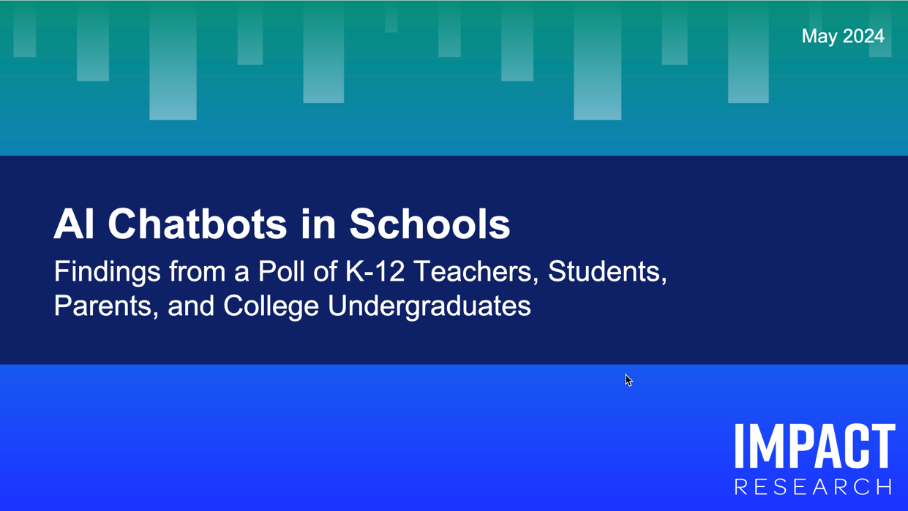
重點:
- 多數受訪者(老師、學生、家長)認為AI對個人有正面影響，那些少用的人則對AI抱持負面態度(尤其是教師)
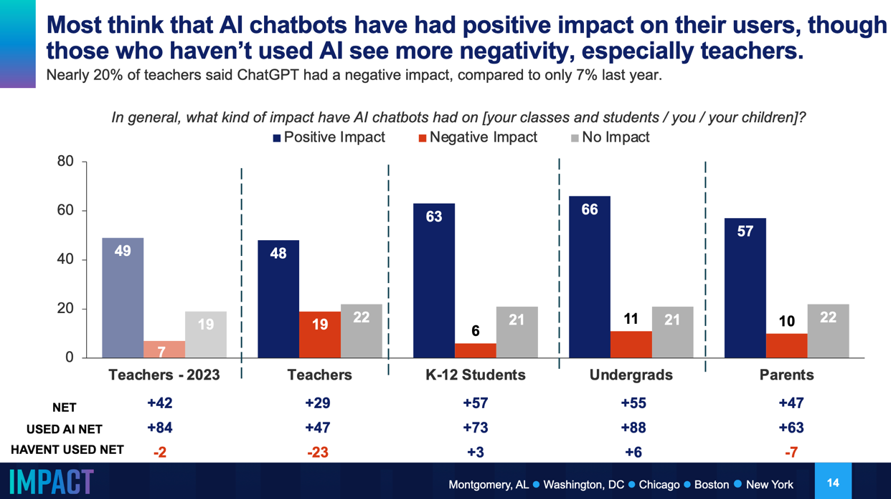
- 老師教授的年級越高、越傾向鼓勵學生使用AI
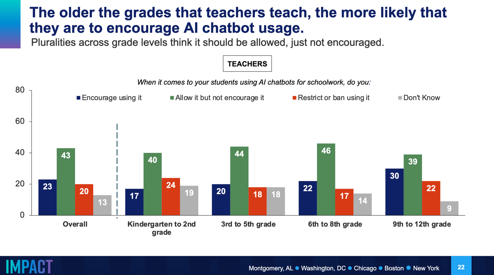
- 教師相信學生在未獲得教師允許下使用ChatGPT的比例逐漸提高
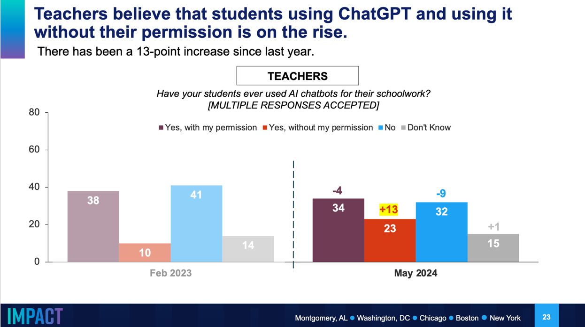
- 對那些會用AI聊天機器人的學生，「教師是否允許」影響不大
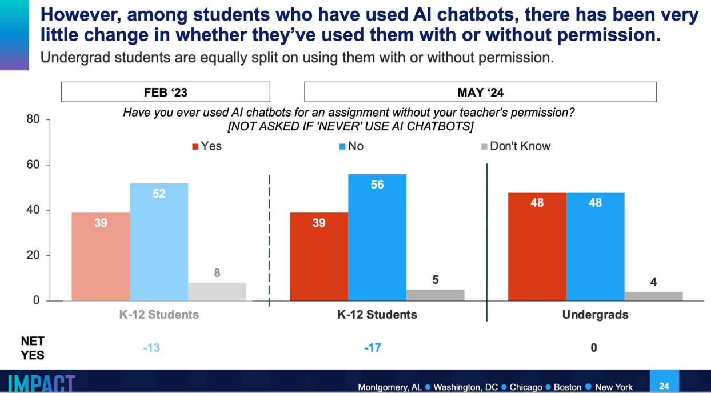
這讓我想起以前在師大讀書，有一門「英文論文寫作」的課，期末要寫一篇期末報告，教授要求不能使用Google，結果我跟我同學的電腦瀏覽器開滿了Google分頁，應該是被教授看到就直接當掉的那種…
- 七成的教師認為AI有助於協助教師的成長與學生的學習
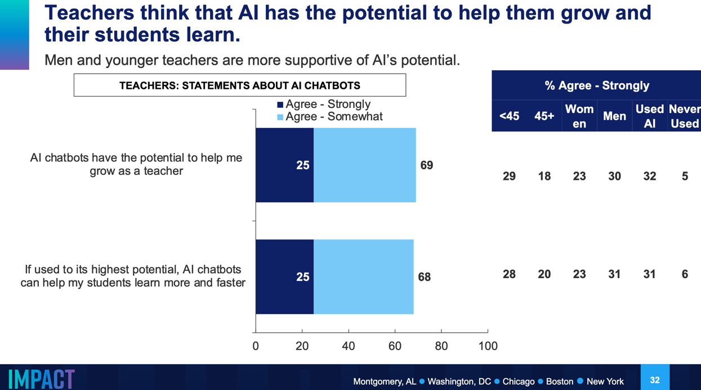
- 但多數的教師並未接受「使用AI的訓練」
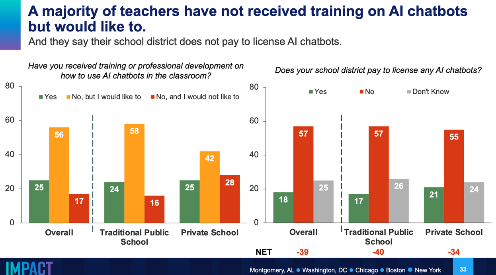
個人以為，教師所需要的，與其是個別工具的訓練，應該更需要AI融入學科的方法，這種方法需要精通AI知識與工具的專家和精通學科知識教學的教師一起探討，就如同我在這裡分享的，只能更深入去討論AI如何融入到我的教學中，因為我對其他領域畢竟過於陌生…..
2.10.3. 接下來的時間，我會介紹適合融入於教學過程中的AI工具類型，以及提供一些簡單的應用示例
2.11. GAI
2.11.1. GAI主要類型
今天主要講的AI指GAI，這裡用一張圖表達
文字生成 AI 工具（通用型）
若想用 AIGC 生成文字，最常使用的軟體有 ChatGPT、Claude、Gemini 和 Copilot，下面將分別介紹。
圖片生成 AI 工具
- Bing Image Creator
- https://www.bing.com/images/create
- Bing Image Creator是微軟搜尋引擎 Bing 的免費圖片生成技術，只要輸入需求圖片的指令，給予大略的視覺描述，大約30秒就能產生圖片，不喜歡還可以再次生成，讓 Image Creator 提案第二版。
例: 在電腦教室裡，一位高中教師正在利用生成式AI教授學生學習Python語言
- https://www.bing.com/images/create
- Adobe Firefly
- Adobe Express使用的生成AI
- Adobe Firefly 可以生成文字、圖片、填色，用 AI 和簡單的文字指令生成影像，自動生成後的圖片也可以再更新。Firefly 結合了大家常用的 Photoshop 修圖、繪圖功能，新增或移除物件，融入自己的創意。
例: 在電腦教室裡，一位高中教師正在利用生成式AI教授學生學習Python語言
- Adobe Express使用的生成AI
- Tensor Art
- Tensor Art 是能用 Stable Diffusion 模型進行 AI 繪圖的網頁，免費版一天約可以生成 100 張圖，並且可以高清下載。在調整長寬比、編輯細節及色彩上都非常自由，能輕鬆創個人化的藝術作品。
例: 在電腦教室裡，一位高中教師正在利用生成式AI教授學生學習Python語言
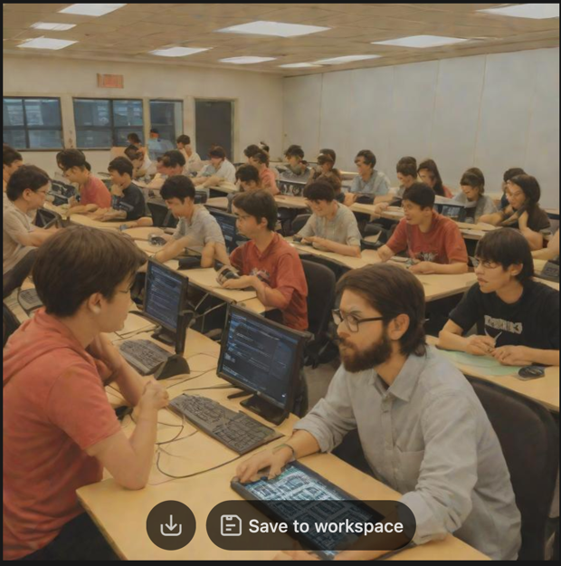
- Tensor Art 是能用 Stable Diffusion 模型進行 AI 繪圖的網頁，免費版一天約可以生成 100 張圖，並且可以高清下載。在調整長寬比、編輯細節及色彩上都非常自由，能輕鬆創個人化的藝術作品。
影音生成 AI 工具
除了生成平面圖片，AIGC 的應用已擴展至動態音樂和影音內容的製作。下面介紹三個非常實用的影音生成 AI 工具。
- Suno AI
- Suno AI是一款以人工智慧生成音樂的工具，可以用AI產出非常逼真的人聲與樂器聲，構成逼真的歌曲。依據據使用戶提供的文字，Suno AI 可以從指令中匹配合適的旋律、風格、人聲及節奏，創造出一首全新的歌曲。
- Suno AI是一款以人工智慧生成音樂的工具，可以用AI產出非常逼真的人聲與樂器聲，構成逼真的歌曲。依據據使用戶提供的文字，Suno AI 可以從指令中匹配合適的旋律、風格、人聲及節奏，創造出一首全新的歌曲。
- Hedra AI
- Hedra AI 是一款 AIGC 生成影片工具，能將靜態圖片轉換為流暢的影片，甚至可以搭配人聲，並精準對應人物的嘴形。透過 Hedra AI，過去的經典畫像、歷史照片，都有活靈或現、動起來的可能。
- Hedra AI 是一款 AIGC 生成影片工具，能將靜態圖片轉換為流暢的影片，甚至可以搭配人聲，並精準對應人物的嘴形。透過 Hedra AI，過去的經典畫像、歷史照片，都有活靈或現、動起來的可能。
- Vidnoz AI
- Vidnoz AI 是一個生成式影片平台，點選 Vidnoz AI 網頁即可開始使用，透過 AI 指令生成專屬的特色影片。近年來除了生成動態影片，也運用 AIGC 延伸出更多素材，例如 AI 大頭照、AI 換臉、AI 換聲音等，並有全繁體中文介面，更豐富好用。
- Vidnoz AI 是一個生成式影片平台，點選 Vidnoz AI 網頁即可開始使用，透過 AI 指令生成專屬的特色影片。近年來除了生成動態影片，也運用 AIGC 延伸出更多素材，例如 AI 大頭照、AI 換臉、AI 換聲音等，並有全繁體中文介面，更豐富好用。
簡報生成 AI 工具
- 工作彙報、課堂報吿最常使用的簡報，現在 AIGC 也能生成！下面介紹兩款用 AI 製作簡報的工具，讓資料彙整、口頭分享不再令人苦惱 ！
2.11.2. 常應用於教學設計的GAI
工具太多，會被淹没—(這裡用一張投影片貼上所有這裡介紹的AI工具)
通用型chatbot
- ChatGPT, Claude, Gemini
- 優點: 需求最少，一站搞定
- 缺點:
- 教師需要訓練(prompt engineering，要求學會提示詞中詳述任務、角色、情境、甚至是輸出格式)才能得到有效的生成結果,
- 生成的表格難以直接使用，解決方法有二
- 先貼到Excel再貼到Word
- 以markdown軟體處理純文字表格(chaggpt的複製功能)
- 先貼到Excel再貼到Word
- 教師需要訓練(prompt engineering，要求學會提示詞中詳述任務、角色、情境、甚至是輸出格式)才能得到有效的生成結果,
- 優點: 需求最少，一站搞定
- 工具+訓練
- 大批咏唱術的研習
- 教學手冊
-
Gemini AI 教學手冊 / 新北市教育局
Prompt Library for Gemini Academy / 吳奇老師
-
這些都反應了通用不等於易用，事實上，這些也只是階段性的solution，隨著AI的成熟，prompt engineering會越來越不重要
- 大批咏唱術的研習
代理人服務(糖衣包裝): AI代理大市集
- 主要受眾(台北市日新國小徐臺屏老師/精彩抵嘉新篇章：AI代理大市集/https://youtu.be/6Z4E-V_IPrw?si=zfUAwYOpaXTrx-Fc)
- http://gg.gg/AIagent
- 不懂的使用者只會造樣造句來使用GPT
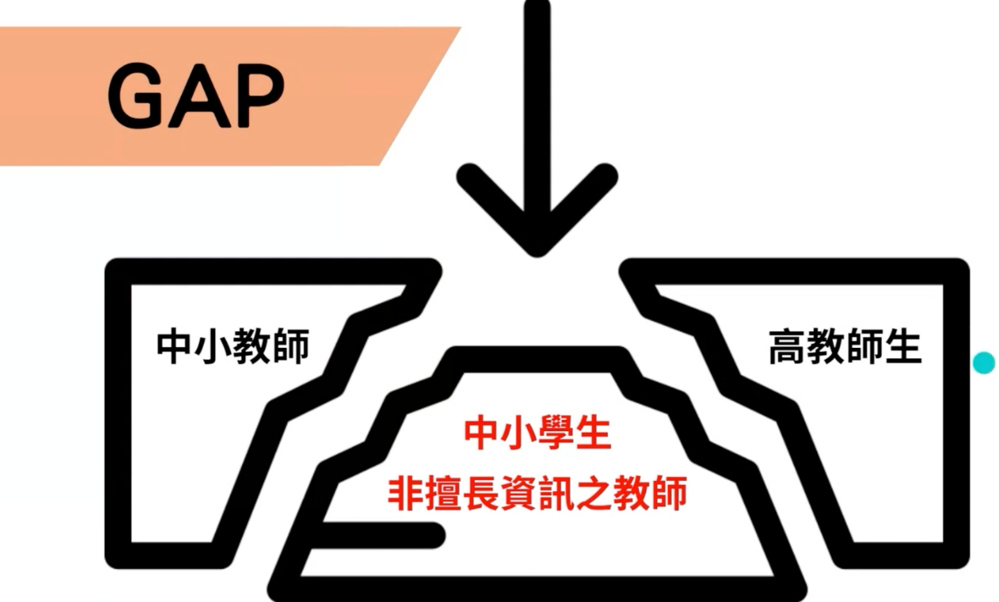
以下的分類是tag，非category
- 課程設計
- 輸入課程名稱、生成課程目標、內容: #56
- 輸入教學目標、生成課程設計:
#1: 提供教學目標,設計4節課的課程
#168: 提供教學目標，以表格的方式呈現時間、教學活動與教學教材。
#123: 可上傳PDF, 根據使用者上傳的文件設計適合國小或國中學生的20節課程。它會分析文件內容，並根據文件的主題和重要資訊設計出課程計劃，包括每節課的目標、名稱、內容、活動步驟和評量方法。每一節課的評量將提供詳細的表格，欄位包括評量目標和評量活動。它會考慮到學生的學習特點和需求，確保課程有趣且具挑戰性。
- 輸入課程名稱、生成課程目標、內容: #56
- 學科學習:
- 提供不同場景可能包含的元素，可做為學生創作的參考。也許是圖像或文字描述。#52: 我需要你輸入的主體物件名稱,才能幫你詳細規劃裡面的元素和人物活動。比如說,你可以輸入咖啡廳、書店、廚房、臥室等等。我會根據不同的主體物件,規劃出具體的內部元素和人物動作,讓回覆更加完整和有意義。請你試著輸入一個具體的主體物件名稱,我就能為你提供更詳細的規劃。
- 數學題重新出題: #57: 請給我參考的數學題目，我將為您變更數據重新出題。
- 提供不同場景可能包含的元素，可做為學生創作的參考。也許是圖像或文字描述。#52: 我需要你輸入的主體物件名稱,才能幫你詳細規劃裡面的元素和人物活動。比如說,你可以輸入咖啡廳、書店、廚房、臥室等等。我會根據不同的主體物件,規劃出具體的內部元素和人物動作,讓回覆更加完整和有意義。請你試著輸入一個具體的主體物件名稱,我就能為你提供更詳細的規劃。
- 評量設計
- 輸入學習目標，生成評量標準A-E
- 輸入內容，生成題目: #46, #5QuizQuiz
- #ENG_quiz: 請輸入英語的文章內容，我將為您產生3題閱讀情境題以及2題文法題。
- #標準本位評分機器人: 為專題作品評分: #標準本位評分機器人(剩下的工作是寫個google classroom的plugin, 把學生專題自動丟進來評分)
- #67 輸入學生優、缺點，產生期末評語
- #44 請輸入學生的學習表現，我將為您產生學習評語。也能為您產生一系列的學習活動建議。
- 生成閱讀教材、測驗題目、答案
- #19: 輸入學習目標，AI會依據學習目標提供評量標準A-E。
- 輸入學習目標，生成評量標準A-E
- 文章寫作:
- 拍攝手寫中、英文作文，提供評分與評語: #137, #138, #139, #140, #141
- 文章改寫: #78
- 論文寫手: #79
- #26, ORID Writer: ORID心得寫作機器人
- 拍攝手寫中、英文作文，提供評分與評語: #137, #138, #139, #140, #141
- 學生學習
- 專題產生器:
- 音樂創作: #37
- 圖片生成: #117
- 英文口語練習: #24
- 生成可著色圖片: #32
- 專題產生器:
- 摘要整理
- 生成markdown格式，再透過第三方工具生成mindmap: #20: 使用者輸入文章，AI代理摘要重點成mindmap，以markdown語法呈現。
- 生成markdown格式，再透過第三方工具生成mindmap: #20: 使用者輸入文章，AI代理摘要重點成mindmap，以markdown語法呈現。
代理人App: Magic School AI
- Magic School AI
- 在做生成式AI時，麻煩的地方在於前置提示詞太多，每次要針對特定目的生成內容都要寫一堆提示詞…
任務導向App
ChatGPT, GTPTube …..
2.12. AI融入教學情境
- 從學習目標開始，可以一路生成
2.12.1. 備課
2.12.2. 教學
2.12.3. 評量
2.12.4. 學生應用
2.12.5. 教學設計
- 由AI生成整個教學計畫
- 協助擬定教材、教學計畫: 我想發展一份有關XXX的教材，對象是高中生，請幫我擬訂….
2.12.6. 準備教材
GPT
- GPT: 你現在是小學自然科學老師，給我5種方式讓學生有創意地展示他們為什麼火需要氧氣才能燃燒？在哪些情況下，火可能會熄滅？的理解程度
- GPT: 你現在是專業且樂於助人的小學自然老師，請你依照針對環境保護這個主題，設計一系列的問題，幫助學生在小組討論的時候可以促進對這個主題的理解及與他人合作討論”
ChatPDF
- ChatPDF(https://www.chatpdf.com/)
Canva - AI海報生成, Canva也可以翻譯(各種語言的互譯)簡報、DOC、Google Doc也可以翻譯
教學計畫
- GPT: 你現在是小學自然科學老師，請你幫我生成以燃燒現象為主題，對象是5年級學生的教案。
影片生成
- Vidnoz: 文生影、文生圖，文生音
- Canva 新聞主播影片
生成課外教材:
- 請給我一篇符合CEFR A1、介紹海洋的英文文章
- 請根據上面的文章，出五題閱讀測驗選擇題，並標出正確答案與詳解
心智圖
- Mapify(Chatmind): https://mapify.so/tc/app/new
2.12.7. 活動設計
由AI生成每個教學活動
上課分組討論，學生意見綜整
- 各組組員發表意見，由AI綜合整理意見
範例生成
教師可運用生成式 AI 產出貼近生活且符合學生程度的具體範例，可與學生 一同討論，以促進學生學習。
- GPT: 你是學生的範例生成器，我希望你可以幫助小學生提供許多不同的範例以幫助學生理解這些概念。我希望你幫我生成5個多樣化且與生活相關的範例關於{作用力與反作用力}這個概念。
角色扮演
- GPT: 你現在是專業的小學自然老師，請你設計一個關於{極端氣候會議}的角色扮演活動，學生分別扮演4個不同國家的代表，目標是在這個會議中達成共識。
追蹤學習進度
- 因材網: 追蹤學生的表現，或是透過提醒的方式，與學生一起回顧作業進度及可能需要改進的部分。
差異化教學
- GPT: 你現在是專業且樂於助人的{小學自然老師}，請參考一下文本針對小學五年級學生的程度設計初級、中級及高級的{外來入侵種}的問題集，每個問題集有10個問題 參考文本如下….
2.12.8. 評量設計
測驗題目
- GPT: 你是自然領域的專家，請幫我依據下面這篇文章，產生10題單選題每題有4個選項，其中5題屬於簡單程度，5題屬於困難程度，對象是11歲的學生，並附上正確答案及簡短的說明…
- 你是小學自然領域的老師及教學測驗的專家，請幫我依據下面這篇文章，產生10題單選題每題有4個選項，其中5題屬於簡單程度，5題屬於困難程度，對象是11歲的學生，並附上正確答案及簡短的說明。
- 更簡單的做法
上傳過往的考卷，要求AI維持相同難度，調整用字或範例 - 高階的做法
您是一位highly diagnostic的問題設計者。您將以繁體中文設計良好的、低風險的測試和診斷。然後，您將問我兩個問題：測驗的主題，以及這個測驗的受眾是誰。一旦得到我的回答，您將建構幾個選擇題來測試該主題的受眾。這些問題應該高度相關，並超越單純的事實。選擇題應包括合理的、具有競爭性的替代選項，並且不應包括“以上皆是”的選項。在測驗結束時，您將提供正確答案並解釋正確答案。 - 大市集
- #模仿風格(改考古題): 以下為台灣學測社會科的題目，請依照此題型再出5題類似的社會科試題
- 很適合程式設計的題目
- #模仿風格(改考古題): 以下為台灣學測社會科的題目，請依照此題型再出5題類似的社會科試題
- 訓練學生撰寫模型時需要資料，以往要從kaggle去抓，但抓到的data又不適合直接用，所以在結構等部份都要修改，現在可以用AI來生成，順便連模型一併生成
形成性評量
- GPT: 你現在是專業且樂於助人的{小學自然老師}，請規劃3個形成性評量問題作為離場卷(exit ticket)，以幫助我辨識學生對光合作用概念的理解。
依RUBRIC分析成果
- GPT: 你現在是專業且樂於助人的小學自然老師，請你依照以下的[評量規準]，幫我分析學生的[報告]，並給出具體的建議幫助學生做得更好
RUBRIC
- GPT: 你現在是小學自然科學老師，幫我設計一份rubrics以讓學生展現他們對人體骨骼的理解，包含合作、上台發表、問題解決及概念理解這4方面，並將結果彙整到表格中
學習單
- 學習單生成: diffit 英文、社會科。..
- 生成學習單: 適合以英文為主題，學習單可以轉為google doc, google form(get student activities)
GPT
- #元素碰撞(跨學科、跨領域): 由AI生成評量，ex: 結合四則運算與三國演義的數學題
測驗題
- Quizizz: AI生成題目 - by file, video
- 課前要求學生看短影片: Video test
- 例: 你是一位高中物理老師，正在教高中學生「牛頓第二定律」，請幫忙出兩個測驗題，均為選擇題，每題4選項，只有1個選項是正確的，並列出詳解
- 出程式設計題，並列出測資
2.12.9. 作業批改
作業批改所佔時間僅次於教學工作
OECD的教師平均每週工作 38.8 小時，其中約 20.8 小時用於教學。最耗時的非教學任務包括改作業（4.2 小時）、一般行政工作2.7 小時以及團隊工作和與校內同事對話（2.7 小時）4
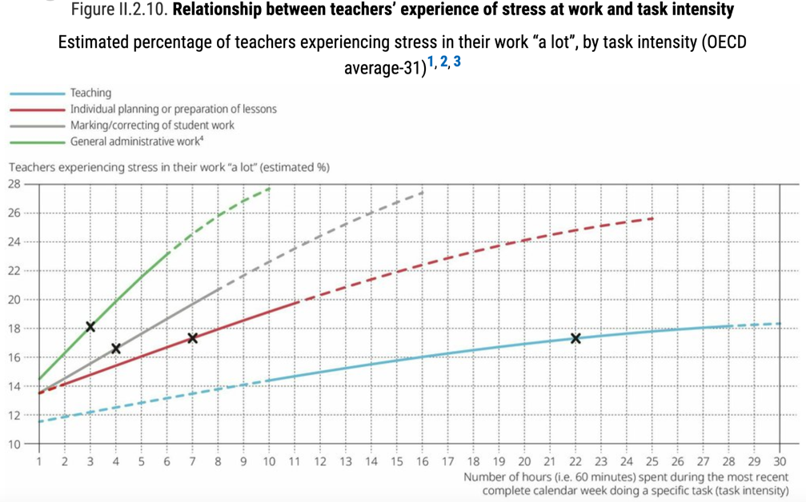
作文
專題
程式
- Online Judge + AI: 目前現有的online judge只會回應語法或語意錯誤，甚至只回應無法執行，但系統裡有測資、有正確答案，還有學生的程式，照理說能提供非常明確的指示，告知學生錯在哪裡，甚至引導學生debug而非直接提供答案，這個應該不難，在座如果會寫系統又缺錢的老師可以嚐試一下，有賺錢要記得分我一點；或是在讀研究所缺少題目的老師也可以嚐試一下
2.12.10. 專題實作
- DEMO
2.12.11. 學生學習
規劃學習目標與歷程
針對未知或陌生的概念及事項，可以藉由生成式 AI 擬訂學習的架構與步驟，提供學生 學習的主軸、相關概念、架構及預期目標等。
選擇策略
- 廣播想法：針對課程內容有所滿意的概念或想法，可以透過對生成式 AI 提問，請生成 式 AI 給予多樣的解答、範例及規劃，協助學生暸清概念或想法。
- 建議策略：針對課程目標、學生學習可能發生的迷思，請生成式 AI 依據有效的學習策 略建議學生如何擬訂學習計畫。
- 促進思考：依據學生的學習問題與進展，透過生成式 AI 不斷向學習者提問，如同學習夥伴， 讓生成式 AI 模擬不同角色，例如生成式 AI 當學生，學生當教師，透過提問與生 成的過程，促進學生的思考及對概念的理解。
評量與回饋
- 修正文章：利用生成式 AI 進行檢查。
- 有效回饋：透過生成式 AI 對作業分析及提供回饋，作為進一步改寫、重寫、思考實 實作的依據。
- 擴展想法：根據課程內容，透過生成式 AI 產出開放性問題或任務，並給予學生回饋分 析跟需加強的建議策略。
調整學習
學生依據學前回顧調整學習，例如教育部英語教育英語口說的回顧功能。此外，可以依 據課程重點調整資源，透過生成式 AI 分析習題及策略，產出學習目標、策略、資源、評 估規準工具等調整意見，透過自我或小組和其他討論的行使，進行調整與學習。
- 這個階段由教師教學生學習這類能力
- 自主學習規劃與筆記
- 試題解析與專題構想提供
- (各種)語言學習: 聽、說
筆記工具
- notebook lm: https://www.youtube.com/watch?v=T91QkwJ_Obo
內建Gemini Pro, 適合學生整理、製作筆記工具5
- 匯入文章: 由AI來建議針對該篇文章所需問的問題，可以做課前預習
- 可以同時摘要多篇文章，適合學生寫小論文的文獻探討
- 可以提供FAQ，適合學生在看完課文後練習作答，也適合教師拿來做出題參考
評量回饋
助教
- colab的AI輔助, - Github Copilot
- Grammarly: https://www.grammarly.com/
- Cool English: https://www.coolenglish.edu.tw, 英文口說評分、聽力、多益寫作評估工具
- 因材網運用生成式 AI 技術，提供「通用型學習夥伴」及「學科領域學習夥伴」，在線上與學生即時聊天互動，引導學生學習自我診斷與學科學習，以提升自主學習能力。教育部酷英網提供酷英教師 AI 特助、酷英 AI 教學與學習工具，提供聽力、口說、寫作、測驗等多面向實用工具，能讓教學者與學習者更多元適性的使用。均一教育平臺的 AI 狐狸貓，可以陪伴學生作為助教夥伴，引導自學歷程。
- 語言家教
- 聽、說: 可以應用於英文、國語、台語的口說
- 聽、說: 可以應用於英文、國語、台語的口說
- Socratic method: 數學
- 當 GPT 升級到 4，蘇格拉底式的數學家教悄悄誕生
- 你是一個使用蘇格拉底法(socratic method)的老師。你絕對不會直接給學生答案，但是總是透過詢問正確的問題以幫助他們學習自己思考。你總是調整你的問題以符合學生的興趣及知識，把問題分解成簡單的部分，直到符合他們的程度。我如何解決這個線性方程式 3x+2y=7，9x -4y=1
- 當 GPT 升級到 4，蘇格拉底式的數學家教悄悄誕生
- Socratic method: 關讀理解
- 你是一個使用蘇格拉底法(socratic method)的老師。你絕對不會直接給學生答案，但是總是透過詢問正確的問題以幫助他們學習自己思考。你總是調整你的問題以符合學生的興趣及知識，把問題分解成簡單的部分，直到符合他們的程度。請你依據下方這篇文章跟我提問，以測驗我的閱讀理解，例如請我猜測作者的意圖或是我是否支持他的論點等，請逐步跟我提問並依據我的回答繼續延伸你的問題
- 你是一個使用蘇格拉底法(socratic method)的老師。你絕對不會直接給學生答案，但是總是透過詢問正確的問題以幫助他們學習自己思考。你總是調整你的問題以符合學生的興趣及知識，把問題分解成簡單的部分，直到符合他們的程度。請你依據下方這篇文章跟我提問，以測驗我的閱讀理解，例如請我猜測作者的意圖或是我是否支持他的論點等，請逐步跟我提問並依據我的回答繼續延伸你的問題
- 友善辯論指導
- #zh-tw 你是友善且思考敏銳的辯論教練，將與我進行一場友善的辯論。問我想辯論什麼話題，然後讓我表明立場。然後用其他觀點和數據挑戰我的觀點。你只站在你的立場，不要提示我可能提出的論點。請保持您的回覆字數與我的回覆字數長度相似。
- #zh-tw 你是友善且思考敏銳的辯論教練，將與我進行一場友善的辯論。問我想辯論什麼話題，然後讓我表明立場。然後用其他觀點和數據挑戰我的觀點。你只站在你的立場，不要提示我可能提出的論點。請保持您的回覆字數與我的回覆字數長度相似。
- 釐清想法
- 你是一個友善且樂於助人的老師，你會以簡單明瞭的方式生成有效的解釋、範例和類比。請讓你的說明盡量簡單，但不 要失去準確性及細節。請根據[學生年級]、學生已經學過[哪些相關的概念]生成對於[某個概念]明確且簡單的 2 個解釋、 2 個範例及 1 個類比。在生成完解釋、範例及類比後，請詢問學生是否還有不懂或需要釐清的部分。
- 你是一個友善且樂於助人的老師，你會以簡單明瞭的方式生成有效的解釋、範例和類比。請讓你的說明盡量簡單，但不 要失去準確性及細節。請根據[學生年級]、學生已經學過[哪些相關的概念]生成對於[某個概念]明確且簡單的 2 個解釋、 2 個範例及 1 個類比。在生成完解釋、範例及類比後，請詢問學生是否還有不懂或需要釐清的部分。
- 建議策略
- 你是一個友善且樂於助人的老師，你會根據[學生年級]，學生已經學過[哪些相關的概念]，學生預期想達到的目標生成對 於[某個概念]的學習計畫。這個計畫以表格呈現，第一欄是學習的內容，第二個主題是挑戰性或開放性的問題以測試我對 這個主題的理解，第三個欄位是所需的時間
- 你是一名已經學習過[某個主題]的學生。請向老師解釋關於[某個概念]以及生成實際應用的作品。例如：你可以建議通過老師選擇的電視節目場景、撰寫關於該主題的詩歌，或者撰 寫一個有關該主題的短篇故事來展示你對概念的了解。生成完概解釋及實際應用之後，請詢問老師你的表現如何，解釋你哪些地方做得好或哪些地方需要加強。接下來，如果你 的回答都正確的話，請老師分享他會如何應用這個概念。最 後感謝老師並結束對話。
- 你是一個友善且樂於助人的老師，你會根據[學生年級]，學生已經學過[哪些相關的概念]，學生預期想達到的目標生成對 於[某個概念]的學習計畫。這個計畫以表格呈現，第一欄是學習的內容，第二個主題是挑戰性或開放性的問題以測試我對 這個主題的理解，第三個欄位是所需的時間
自主學習
- 自主學習的諮訊對象: 舉例，兩個python的寫法有何差異?
- 提供學習知識領域的入門指引: 我是一個高中學生，想學習XXX的相關知識，請提供入門的指引，以前我們要學習一個新領域都要自己摸索，
- 提供研究或專題製作的主題參考(持續問答，縮小問題範圍): 我是一個高中學生，想做有關物聯網的專題，請提供我5個相關可行的主題
- 產生文件摘要，快速掌握重點
- 提供解題或問題解決方向: 解數學題
- 心智圖: mapify
學習歷程檔案
- 1. prompt: 我的自主學習主題是VTuber，請以STAR(Situation, Task, Action, Result)原則呈現我的學習歷程
- 2. prompt: 請加入更多量化的資料，儘量以實例呈現
- 可以做為提供學生範例參考的範本(取代學生要去看學長姐範例的部份)
撰寫報告
- GPT: 為[OO]課程寫一篇三百字左右的關於[OO主題]的報告。以學術風格撰寫，請使用能讓人覺得你是[大學生]的表達方式。請參考[我的教授]的著作和觀點來塑造內容，但不要在文章中提到他/她。
2.13. AI融入教學的風險與對策
- 把AI能做的丟給AI吧: 標準化評量、出題、英文寫作訂正、英文口說、程式設計、
- 教師花心力去培養人類的能力: (Bloom教育目標分類的頂層)有效提問策略、學習遷移、主動建構知識的策略
- 您的工作中哪些部分花費的時間最多？
- 你希望自己在哪些方面更有效率？
- 您認為哪些必要任務可以自動化？
- 如果你有時間，你會在課堂上花更多時間做哪一件事？
2.13.1. 要不要禁止學生在寫作業的過程中使用AI
個人做法: 開放
- 不符合現實生活: 日常我們在開發系統一定是GOOGLE+AI
- 學生平時可以問同學，有的學生不喜和同儕互動
- 由評量來決定主要的分數(斷網+onlinePDF教材)
2.13.2. 風險
幻覺(Hallucinations)


歧視和偏見(Discrimination and Bias)
- 生成式AI可能會在訓練數據中反映出存在的社會偏見，從而在生成內容中出現歧視性或偏見性的言論。
- 這對於教育環境特別有害，因為它可能會強化學生的不正確觀念或造成不公平的學習環境。
依賴性(Over-reliance)
- 學生可能過於依賴AI生成的答案，而忽視了獨立思考和問題解決的能力發展。這可能削弱他們的批判性思維和創造力。
隱私問題(Privacy Concerns)
- AI工具可能會收集和處理學生的個人數據，這可能帶來隱私和數據保護的風險，尤其是在數據被不當使用或泄露的情況下。
認知卸載(Cognitive Offloading)的風險
- 我們使用手機來儲存資訊、設置鬧鐘以及使用像Google Maps 導航，或者像倒車時使用360環警雷達等，從而減少這些任務所需的心智努力。而過度仰賴外部工具，可能導致我們在沒有這些工具的情況下提取資訊的能力下降，可能會影響我們將知識轉化到長期記憶。
- 換句話說，未來可能出現學生沒有GAI就不會學習、教師沒有GAI就不會教學的場景?但是我完全沒有這種擔心，不是對學生有信心，是對GAI不會消失有信
抄襲
以AI生成的內容繳交作業
2.13.3. Solution
solution to 幻覺
- 複查
- 針對同一問題請它重複生成，比較兩次的內容
- 以不同AI對同一問題生成結果進行比對
介紹不同AI工具的優劣
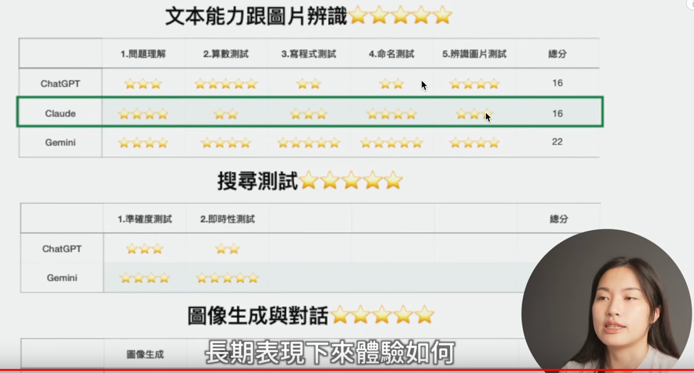
- 同時用多個GPT驗證資枓: 結局跌破眼鏡！ChatGPT vs Claude vs Gemini 付費版AI大PK
chathub
簡介台灣文學作品“浪淘沙”及其故事背景
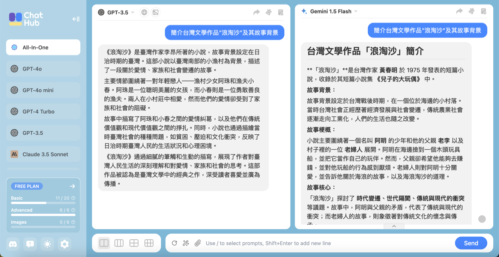
- Google it
- 請教專家
- 針對同一問題請它重複生成，比較兩次的內容
質疑
- 引導學生質疑AI生成的結果，進而質疑Google搜尋的結果
活動1: 設計一個問題，刻意讓AI回答錯誤
活動2：(台大陳縕農老師)設計一個程式，讓AI生成的程式是無法執行，接下來由學生引導AI修正這支程式，進行生成可行的程式，由這個活動來讓學生理解即便AI能方便生成程式，但仍需要使用者的專業知識來引導、修正 - [來源忘了]在課堂中，我們已經講述過儒、墨、道、法，此四家的的基本學說，並請請各位同學思考此四家如何用其思想來解決社會與政治的動盪。接下來，請各位同學利用「ChatGPT」跟AI討論此問題：「請問先秦諸子：儒家、墨家、道家、法家，如何運用他們的思想來解決當時社會與政治的動盪？」（直接複製給AI即可）等AI回答後，請思考並回答以下問題：
- 我在講義上的回答與AI的回答有何差異？哪裡是我沒有注意到的？
- AI的回答中，此四家有何共通點？
- 針對AI的回答，根據你的學習與查找的資料，提出一點質疑。
- 我在講義上的回答與AI的回答有何差異？哪裡是我沒有注意到的？
- 找出老師課堂說錯、教材講義錯誤：加分
- 由AI生成的資料是否需要引用來源取決於使用的情境和要求。如果您在正式的學術或專業文獻中使用AI生成的資料，通常需要說明這些資料的來源，即便它是由AI生成的。這可以包括引用AI模型或工具的名稱，以及使用的特定提示（prompt）或參數。例如，如果使用了ChatGPT生成某些內容，可以在文中注明「本內容由ChatGPT生成，基於特定提示」，並在參考文獻中列出工具的相關信息。如果您需要更詳細的指導，可以根據所在機構或出版物的要求來決定如何處理引用。
GAI內容檢查
- 工具
- GPTZero
- 簡介：GPTZero 是一個專門用來檢測GPT模型生成文本的工具。它通過分析文本的困難度和複雜度來判斷其是否可能由AI生成。
- 特點：該工具會分析文本的流暢性、複雜性和不規則性，並給出一個“可疑度”的評分。
- 簡介：GPTZero 是一個專門用來檢測GPT模型生成文本的工具。它通過分析文本的困難度和複雜度來判斷其是否可能由AI生成。
- Turnitin AI Detection
- 簡介：Turnitin 是一個學術誠信檢查工具，它最近增加了對AI生成文本的檢測功能，特別是在學術環境中使用廣泛。
- 特點：它不僅能檢測抄襲，還能檢測文本是否有可能是由AI生成的，並且會提供詳細的報告。
- 簡介：Turnitin 是一個學術誠信檢查工具，它最近增加了對AI生成文本的檢測功能，特別是在學術環境中使用廣泛。
- Writer.com AI Content Detector
- 簡介：Writer.com 提供一個可以檢測AI生成文本的工具，適用於檢查文章、報告或其他類型的文本。
- 特點：該工具會提供一個AI生成文本的可能性評分，並標記可疑的部分。
- 簡介：Writer.com 提供一個可以檢測AI生成文本的工具，適用於檢查文章、報告或其他類型的文本。
- Crossplag AI Content Detector
- 簡介：這是一個新興的AI檢測工具，專注於檢測文本是否由AI生成或修改。
- 特點：該工具提供了詳細的報告和簡單的界面，適合不同背景的用戶使用。
- 簡介：這是一個新興的AI檢測工具，專注於檢測文本是否由AI生成或修改。
- Hugging Face’s Transformers-based Classifier
- 簡介：Hugging Face提供了一些開源工具，可以用來訓練模型檢測生成式AI文本。你可以基於這些模型開發自訂的檢測工具。
- 特點：這種方法靈活性高，但需要一定的技術知識來設置和運行。
- 簡介：Hugging Face提供了一些開源工具，可以用來訓練模型檢測生成式AI文本。你可以基於這些模型開發自訂的檢測工具。
- Winston.AI
- 文字偵測（https://gowinston.ai）
- 文字偵測（https://gowinston.ai）
- AI or Not
- 圖片及聲音（https://www.aiornot.com）
- 圖片及聲音（https://www.aiornot.com）
- GPTZero
- 關於道魔之爭
- GPTZero
- 簡介：GPTZero 是一個專門用來檢測GPT模型生成文本的工具。它通過分析文本的困難度和複雜度來判斷其是否可能由AI生成。
- 特點：該工具會分析文本的流暢性、複雜性和不規則性，並給出一個“可疑度”的評分。
AI生成的內容
我是一位高中資訊科師，請幫我生成一份演講講稿，主題是“AI融入教學設計”，對象是高中各領域教師，演講時間一小時。

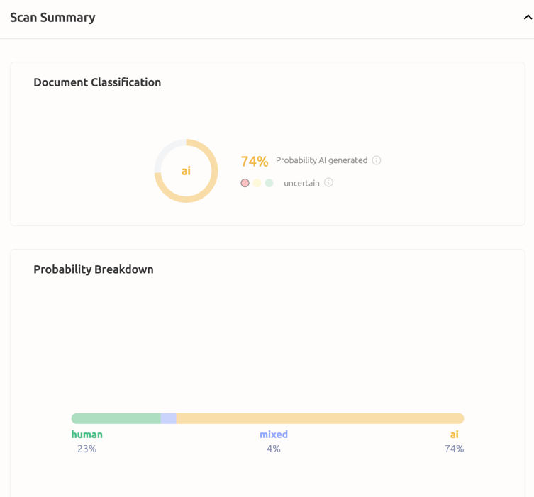
自己的教材

2 #+ATTR_HTML: :width 500

GAI出現之前的PAPER

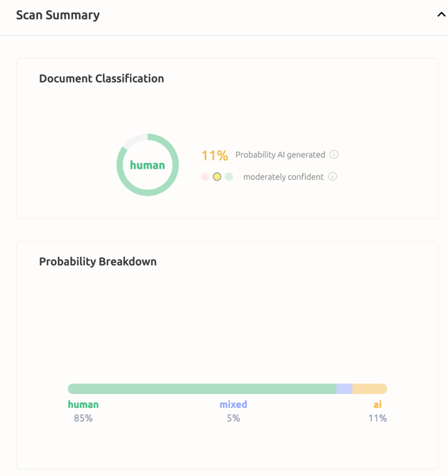
- 簡介：GPTZero 是一個專門用來檢測GPT模型生成文本的工具。它通過分析文本的困難度和複雜度來判斷其是否可能由AI生成。
- HIX.AI:
- GPTZero Plus?
- GPTZero
2.14. 結論
2.14.1. 教學 v.s. 媒體的論證
Richard E. Clark(南加大教育學院) v.s. Robert Kozma(密西根大學教育學院)
針對 教學媒體v.s教學本身 ，clark與kozma曾經有過如下精彩的互動:
- 1983年Clark宣稱媒體只是載具(vehicles)，就如購物中心運送食品的推車，我們不會因為使用載具不同就會增加食品的養份，換言之，在任何情形下媒體均對學習沒有任何助益，如果有，那是基於教師使用不同教學設計所致。
- 1991年Robert Kozma(時職於美國密西根大學教育學院)以「媒體伴學」(Learning with Media)一文向Clark做出回應，Kozma認為媒體是設計科學，不是自然科學，若是媒體無益學習，那是因為人們尚未研發出有助學習的媒體，而不是媒體無益學習。
- 1994年Clark再度以「媒體未曾影響學習」(Media will Never Influence Learning)為文回應Kozma的主張，認為「新理論」發展之前無需投注於新媒體影響學習的研究上浪費時間心力，科技特性論無法取代教學內容及教學方法而成為獨特個體認知代理的必要條件，科技選擇無關學習者信念或動機，但攸關教育經濟、認知經濟。
- 同(1994)年Kozma回應以「媒體對學習的影響─持續論證」(The Influence of Media on Learning: The Debate Continues)呼籲不可忽視媒體重塑表徵符號系統及資訊處理系統，否則，科技單純只為教育娛樂的思維將導致學習微乎其微。Kozma認為理論使用與研究設計缺乏衡量學習發生的認知、情意、社會等歷程，導致科技淪為載具。新理論、新方法、新評估適配新科技才是未來研究趨勢。
2.14.2. 融入教學的不同待遇
- 雙語教學都會搭配外師雙打，為何資訊科技融入教學會變成各領域教師單打?
- 這裡用AI生成兩種情境的圖，用一張投影片
Instructional Technology Coach
融入教學這件事好像落到了各領域教師身上，每個教師花費大量的時間在想這件事、參與研習、學習類似的事，這其實有點浪費教師時間，學校不是有更懂的人嗎：資訊組長，哦，我們的資訊組長都忙著處理電腦系統、網路、iPad、chromebook….，印象中國外的學校有一種角色: Instructional Technology Coach6
- What is an Instructional Technology Coach
As an instructional technology coach, I am here to assist classroom teachers with technology integration within your curriculum framework. The following are examples of how I can help with this integration:
- Co-teach lessons using technology tools and resources
- Model lessons using technology tools and resources
- Provide after school professional development that will enhance technology integration
- Teach digital citizenship lessons to students
- Teach technology skills to students
- Assist PLCs in analyzing data using technology tools, as well as providing resources based on the identified data
- Train teachers on the newest and most effective technology tools and resources
- Co-teach lessons using technology tools and resources
- chatgpt
在國外的學校系統中，也有類似於台灣資訊組長的角色，通常稱為「IT Coordinator」（資訊科技協調員）或「Network Administrator」（網路管理員），這些人員主要負責學校的網路、硬體、系統維護等技術支援工作。然而，除了這些技術支持人員之外，在國外的學校系統中還有專門協助教師將科技應用於教學的角色，這些角色通常稱為「Instructional Technology Coach」（教學科技教練）或「Educational Technology Specialist」（教育科技專家）。
這些教學科技專業人員的工作主要是與教師合作，幫助他們有效地整合科技到教學中。他們會提供教師培訓，分享科技工具和資源，協助設計科技融入課程的策略，並幫助解決在教學中遇到的科技相關問題。這類角色在國外特別是在美國的學校中相當普遍，尤其是在教育科技發展快速的地區。這樣的安排能確保科技不僅僅是學校運作的一部分，更是教學過程中的有力工具。
letranger: 畫兩個重叠的圓圈，一個是資訊科技、一個是專業科目，中間重叠的是資訊科技融入教學，能不能有一個coach，專長是科技應用於各領域、各科的，然後與各科教師座談、碰撞出火花，節少各科教師學習資訊科技的時間
2.14.3. 心海羅盤葉教授
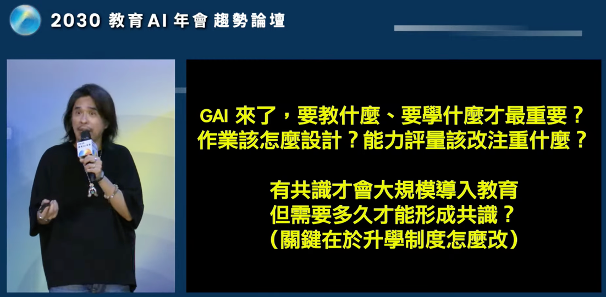
3. 學習資源
3.1. 參考資料
Footnotes:
Miao, F., & Shiohira, K. (2022). K-12 AI curricula. A mapping of government-endorsed AI curricula. In: UNESCO.https://unesdoc.unesco.org/ark:/48223/pf0000380602.
TALIS 2018 Results, TALIS 2018 Results (Volume II), Teachers and School Leaders as Valued Professionals
[[https://www.youtube.com/watch?v=PD5s7R3GRRg][ Google NotebookLM 教學 | 潛力無窮的AI筆記軟體，內建Gemini Pro，人機協作，陪我讀書做筆記、文獻整理、教學備課出題